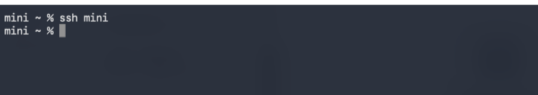
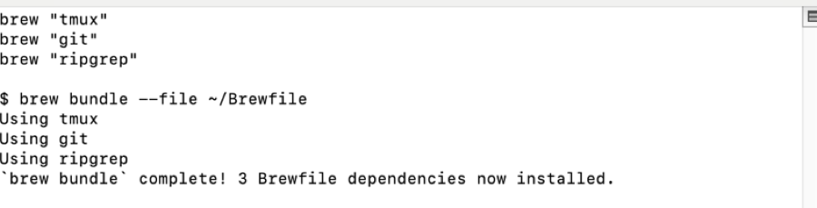
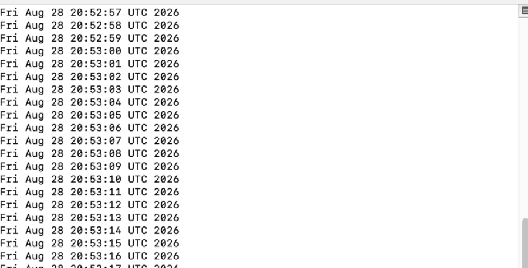
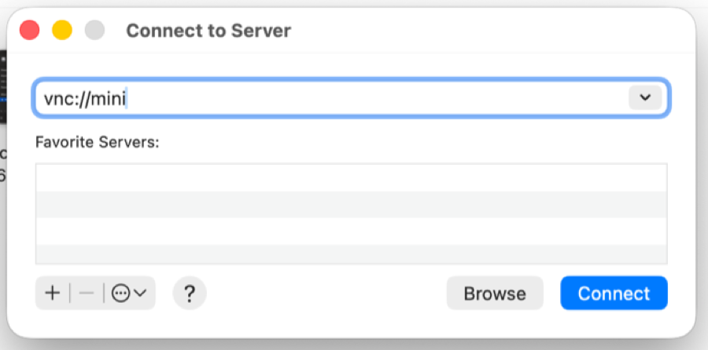

Eight things turn a pile of computers into a herd. They go in
this order, because each one assumes the last. None of them needs Little
Herd, and no single one of them is a big job.
When you are done, the mini under the desk is as
easy to work on as the laptop in your hands, from anywhere, without
thinking about it. The machines stop being places you visit one at a time
and become one pool of capacity you use. That is the whole point of the
word.
Everything here is built into macOS, free, or open source. Reckon on an afternoon, most of it spent waiting for installers.
Where there is one mistake that costs an evening, it is called out — most
of these look like they worked right up until the moment they matter.
Act 1
Get access
Reaching every machine, and making each one worth arriving at.
1
Reach any machine from anywhere
One name per machine that works from the sofa, from a hotel, and from another machine in the herd — with nothing exposed to the open internet.
This one is first because everything below it assumes you can reach
the machine at all. Install on each one, sign in with the same account,
turn on MagicDNS, and you are done — no port forwarding, no static
IP, no router configuration, and nothing listening on the public
internet.
The trap: a machine’s key expires by default,
usually in about six months. A laptop you use daily just asks you to sign
in again. An unattended box silently drops off the network and
you discover it the next time you need it, which is the worst possible
moment. Disable key expiry for anything headless.
And: a .local name is mDNS. It resolves
at home and nowhere else, so a setup tested only on the sofa looks
finished and fails the first time you leave the house. Use the tailnet
name everywhere, including in scripts.
Want to go further than this page does? Ask ChatGPT to walk you
through installing and using Tailscale on your own machines.
Generate a key, copy it over with ssh-copy-id, then write
the machine down in ~/.ssh/config once:
HostminiHostNamemini.your-tailnet.ts.netUseryou
That name now works everywhere SSH does —
scp file mini:, rsync, an editor’s remote
mode, a backup job. Keep the file in your dotfiles and
Include it rather than editing it per machine.
The trap: a key with a passphrase cannot be used by
anything that runs unattended — there is nobody there to type it.
Keep your passphrase key for sitting-at-the-keyboard work, and give
scheduled jobs their own passphrase-free key, authorised for exactly the
one link it needs. A single key for both is how a convenience becomes
the blast radius.
And: SSH silently ignores a config or key file that
other users can write. Wrong permissions do not produce an error that
says “permissions” — they produce
Permission denied (publickey), which sends you off
debugging the key instead. chmod 600.

Landing on another machine, from its short name.
Want to go further than this page does? Ask ChatGPT to walk you
through installing and using SSH and ~/.ssh/config on your own machines.
A herd whose members each have a different half of your toolkit is
still a pile. Dump what you have into a list, keep the list in your
dotfiles, and install from it on every machine:
A new machine goes from bare to useful in one command, and when you
adopt a tool you add it once.
The trap: a non-interactive shell — a cron
job, a scheduled task, or ssh machine some-command —
does not read your profile, so on Apple silicon it never gets
/opt/homebrew/bin on its PATH. Everything works
when you are typing and fails when it runs by itself, reporting
command not found for something you can plainly see installed.
Scripts should set their own PATH rather than assume yours.
And: casks are GUI applications. Put them on the
machine you sit in front of, not the headless one, where they are weight
with nothing to show.

One command, and the machine has your toolkit.
Want to go further than this page does? Ask ChatGPT to walk you
through installing and using Homebrew and a Brewfile on your own machines.
The trick is that the session belongs to the far machine, not to your
connection. You are attaching to something already running there:
ssh mini
tmux new -s work # start it there# Ctrl-b then d # detach; the work keeps goingtmux attach -t work # come back, from anywhere
This is the single biggest change in how remote machines feel. They
stop being fragile.
The trap: tmux has to run on the remote
machine. Starting it in a local terminal and then SSH-ing from
inside gives you a session that dies with your connection, which is the
exact thing you were trying to prevent. SSH first, then tmux.

The green bar is tmux. The work is running on the far machine.
Want to go further than this page does? Ask ChatGPT to walk you
through installing and using tmux on your own machines.
In Finder, Go → Connect to Server (⌘K) and
enter vnc://mini. You get the actual desktop.
Most of the time SSH is better — faster, scriptable, works on a
bad connection. But some things only exist on the screen: a permission
dialog, an installer, a first run, an app that has decided to show you a
window. Those are not stubbornness on your part; they genuinely cannot be
done over a shell.
The trap: macOS privacy prompts appear on the
machine’s own screen and nowhere else, so a script that needs
Screen Recording or Full Disk Access will sit there having silently
failed while you stare at an SSH session with no error in it. Grant those
over Screen Sharing, once, before automating anything that needs them.
And the honest limit: if a machine is wedged before
the operating system is up, neither SSH nor Screen Sharing can reach it,
because both are software running inside the thing that has not started.
That is what a hardware KVM is for, and it is the only thing that is.

Finder’s Connect to Server, waiting for a machine name.
Want to go further than this page does? Ask ChatGPT to walk you
through installing and using macOS Screen Sharing on your own machines.
Once coding agents are doing real work, the question stops being
“is it done” and becomes “which of these is waiting on
me.” tmux will happily keep four agents alive and tell you nothing
about any of them; Herdr shows each one as working, blocked, or done, and
its sessions detach and reattach over SSH the same way.
It runs the agents on one machine, which is the natural
complement to seeing them across all of them — and it is where
Little Herd stops being optional.
Want to go further than this page does? Ask ChatGPT to walk you
through installing and using Herdr on your own machines.
Every Mac in the herd can back up over the network to the same NAS
share — no cable, no swapping a drive between machines. For a Linux
box, or for anything you would rather the NAS could not read,
restic encrypts on the machine and
sends only ciphertext, so the destination stores your backups without
being able to open them.
The trap: a backup you have never restored from is
not a backup, it is a belief. Restore one file, deliberately, the week
you set it up — the failure you are guarding against is the one
where the job has been reporting success for a year into a destination
that quietly stopped mounting.
And: whatever key writes the backups can usually
delete them, so a machine that is compromised can take its own history
with it. If the destination can be made append-only, do it; if it
cannot, at least know that is the gap rather than assuming a copy
somewhere is the same as a copy you cannot lose.
Want to go further than this page does? Ask ChatGPT to walk you
through installing and using Time Machine and restic on your own machines.
Or self-host
Uptime Kuma on a
machine in the herd, with the caveat below. The shape that works either
way is a dead man’s switch: each machine, and
each scheduled job, checks in after a successful run. Nothing arriving
is the alarm. That catches the failures a ping never will — a
machine that is up and answering while the backup on it has not run
since March.
The trap: do not let a machine watch itself. A box
that reports on its own backups goes quiet at exactly the moment its
report matters, and silence from something that only ever spoke when it
was healthy is indistinguishable from everything being fine. Have
another machine hold the expectation.
And the honest limit: if two machines watch each
other and the power goes out, both are down and neither can tell you.
Only something outside the house closes that, which is the argument for
a hosted check over one you run at home — and the reason to know
which of the two you have chosen.
Want to go further than this page does? Ask ChatGPT to walk you
through installing and using Healthchecks.io on your own machines.
Once a machine is reachable, kept current and watched, it
can be given something to run for the whole house rather than for you.
Pi-hole answers DNS for every device on
the network and drops the ad and tracker domains before they resolve. A
media server does the same trick for films. A spare machine with a fast
disk makes a good build cache.
None of those are in this guide, because each is its own
afternoon and none of them is about running machines together.
They are simply the sort of thing you can do once you have somewhere to
put them.
You have a herd.
Every machine reachable by name from anywhere. One command
onto any of them. The same tools waiting when you arrive, work that
outlives your connection, a screen when you need one, agents you can walk
away from, one place holding every backup, and something that will tell
you when any of it stops.
The last thing missing is being able to see it all
at once — which is the one part we make.